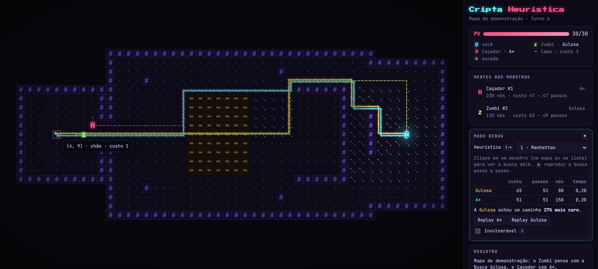
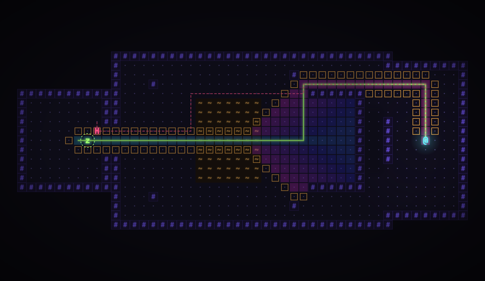
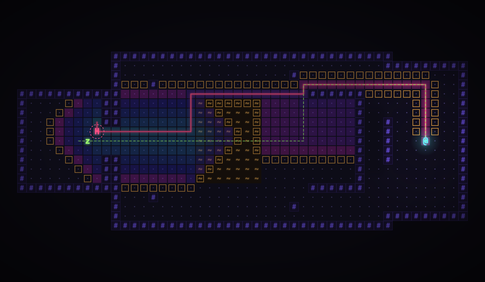

Encontrar caminhos (pathfinding) é um dos problemas mais clássicos de Inteligência Artificial aplicada a jogos: um personagem controlado pelo computador precisa decidir, a cada momento, por onde andar para alcançar um alvo sem atravessar obstáculos. Em jogos do gênero roguelike (exploração de masmorras geradas proceduralmente, em turnos, com morte permanente) o problema é especialmente interessante: o mapa muda a cada partida, não pode ser pré-processado à mão, e vários inimigos replanejam ao mesmo tempo em todo turno, o que torna o custo computacional da busca relevante.
Desenvolvemos a Cripta Heurística, um roguelike para navegador em que dois tipos de inimigos perseguem o jogador usando algoritmos diferentes: o Zumbi usa a Busca Gulosa pela melhor escolha (Greedy Best-First Search) e o Caçador usa o A*. O terreno tem custo variável (a lama custa 3 vezes mais que o chão), de modo que a diferença entre um caminho que parece curto e um caminho que é barato aparece na própria jogabilidade: o Zumbi atravessa a lama e se atrasa, enquanto o Caçador contorna. Um modo de depuração mostra, sobre o mapa, os nós expandidos, a fronteira de busca e os valores g, h e f de cada célula, e um módulo de benchmark mede o desempenho dos algoritmos em cenários controlados.
Fundamentação. Algoritmos de busca informada escolhem o próximo nó a expandir por uma função de avaliação f(n) (RUSSELL; NORVIG, 2022). O A* (HART; NILSSON; RAPHAEL, 1968) usa f = g + h, em que g(n) é o custo já percorrido e h(n) uma estimativa do custo restante. Se h nunca superestima (é admissível), o A* encontra o caminho de custo mínimo; se, além disso, é consistente, nenhum nó precisa ser reaberto. A Busca Gulosa usa apenas f = h: tende a expandir menos nós, mas não garante otimalidade. Com h = 0, o A* se reduz ao algoritmo de Dijkstra (1959), e multiplicar h por um peso w > 1 gera o A* ponderado (POHL, 1970), cujo custo é no máximo w vezes o ótimo. Grids 2D são o banco de testes padrão para comparar esses algoritmos (STURTEVANT, 2012), e o material de Patel (2014) foi a principal referência técnica sobre heurísticas em grids e critérios de desempate.
Como só existem movimentos ortogonais e o menor custo de passo é 1, qualquer caminho de n ao objetivo tem pelo menos |Δx| + |Δy| passos de custo ≥ 1; logo a distância de Manhattan nunca superestima o custo real (admissível). Um passo altera a Manhattan em no máximo 1 e custa pelo menos 1, então h(n) ≤ c(n, n') + h(n') (consistente). A Euclidiana é sempre ≤ Manhattan, herda as duas propriedades, mas é dominada por ela: é menos informada.
Tabela 1 – Heurísticas implementadas
| Heurística | Fórmula | Admissível | Consistente | Papel no trabalho |
|---|---|---|---|---|
| Manhattan | |Δx| + |Δy| | sim | sim | Padrão do jogo; exata em sala vazia sem lama |
| Euclidiana | √(Δx² + Δy²) | sim | sim | Menos informada; mostra o efeito da qualidade de h |
| Zero | 0 | sim | sim | A* vira Dijkstra; referência de custo ótimo |
| 2×Manhattan | 2(|Δx| + |Δy|) | não | não | A* ponderado (w = 2): custo ≤ 2 × ótimo |
Uma limitação importante: nenhuma dessas heurísticas enxerga a lama. Quanto mais lama existe entre n e o objetivo, mais h subestima o custo real e menos ela ajuda o A*, efeito medido no Cenário 3.
No código, os dois algoritmos são a mesma função (bestFirstSearch em
src/core/search.ts), parametrizada por duas escolhas: a prioridade usada na lista aberta e se nós já
abertos podem ter g melhorado (relaxamento):
função BUSCA_PELA_MELHOR_ESCOLHA(grid, início, objetivo, h, f, relaxar):
g[início] ← 0; ABERTA ← heap com {início}
enquanto ABERTA não estiver vazia:
n ← retira de ABERTA o nó de menor f ▹ desempate: menor h, depois ordem de chegada
se n ∈ FECHADA: continue ▹ entrada obsoleta ("remoção preguiçosa")
FECHADA ← FECHADA ∪ {n}
se n = objetivo: retorne CAMINHO(pai, n), g[n]
para cada vizinho v de n (N, L, S, O) que não é parede e v ∉ FECHADA:
g' ← g[n] + custo(v)
se v nunca foi visto OU (relaxar E g' < g[v]):
g[v] ← g'; pai[v] ← n; insere v em ABERTA com prioridade f(g', h(v))
retorne FALHA
A* : f = g + h, relaxar = verdadeiro
Gulosa : f = h, relaxar = falso (fica com o primeiro caminho que descobriu)
Tabela 2 – Comparação teórica entre os algoritmos
| Propriedade | Busca Gulosa | A* |
|---|---|---|
| Função de avaliação | f(n) = h(n) | f(n) = g(n) + h(n) |
| Considera o custo já percorrido / o terreno | não | sim |
| Completa (grafo finito, com lista fechada) | sim | sim |
| Ótima | não | sim, com h consistente (nosso caso) |
| Pior caso (grid com N células, heap binário) | O(N log N) tempo, O(N) memória | O(N log N) tempo, O(N) memória |
| Comportamento típico | poucos nós; "vai reto" na direção do alvo | mais nós; caminho de custo mínimo |
A lista aberta é um heap binário mínimo; o desempate pelo menor h faz o A* preferir, entre nós com o mesmo f, os mais próximos do objetivo, o que reduz muito as expansões em grids (PATEL, 2014), e a ordem de inserção torna todo resultado determinístico. Em vez de "diminuir a chave" de um nó, uma nova entrada é inserida e a antiga é descartada ao sair do heap. g, pai e lista fechada são vetores tipados indexados pela célula.
Tabela 3 – Organização do código (TypeScript, Vite, Canvas 2D, Chart.js, Vitest)
| Módulo | Responsabilidade |
|---|---|
src/core |
Espaço de estados (grid.ts), heurísticas, heap, Gulosa/A* (search.ts), gerador de
dungeons e mapa de demonstração. Não depende de interface: o mesmo código roda no jogo, nos testes e no
benchmark.
|
src/game |
Regras por turnos, campo de visão, renderização em pixel art (sprites CC0 do pacote Tiny Dungeon, de Kenney) ou em glifos neon, névoa de guerra, modo debug (mapa de calor, replay passo a passo, comparação Gulosa × A* até o cursor) e painel lateral. |
src/bench |
Cenários, execução e agregação, compartilhados pelo script Node e pela página /bench. |
tests |
15 testes automatizados (descritos abaixo). |
O gerador de dungeons sorteia salas sem sobreposição, liga todas por uma árvore geradora mínima (Prim), adiciona corredores extras formando ciclos e espalha manchas de lama. Os ciclos são essenciais: numa dungeon em árvore só existe uma rota entre dois pontos e A* e Gulosa achariam sempre o mesmo caminho. Tudo usa um gerador pseudoaleatório com seed (mulberry32), logo qualquer mapa é reproduzível.
A correção é verificada com testes de propriedade: em 500 grids aleatórios com paredes e lama, o A* com Manhattan e com Euclidiana encontra exatamente o mesmo custo que o Dijkstra; o A* ponderado nunca passa de 2× o ótimo; a Gulosa sempre encontra caminho quando ele existe, nunca abaixo do ótimo; todo caminho devolvido é válido e tem o custo declarado. Também são testados casos de borda (início = objetivo, objetivo isolado), o heap, a conectividade e o determinismo do gerador, e o mapa de demonstração.



Cada configuração (cenário × variante × algoritmo) foi avaliada em {{QUERIES}} consultas:
{{SEEDS}} dungeons com seeds fixas × {{PAIRS}} pares início/objetivo sorteados (distância de Manhattan ≥
(L + A)/4). Todos os algoritmos rodam sobre os mesmos pares, e o custo ótimo de referência é
o do Dijkstra. Como uma busca leva microssegundos, cada uma é repetida até somar pelo menos 1 ms e o tempo
registrado é a média das repetições, após uma fase de aquecimento do compilador JIT. Métricas: tempo (média e
percentil 95), nós expandidos, tamanho máximo da lista aberta (memória), custo do caminho, razão de
subotimalidade (custo encontrado ÷ custo ótimo; 1,0 = ótimo) e porcentagem de caminhos ótimos. Ambiente:
{{ENV}}. O benchmark completo ({{TASKS}} tarefas) levou {{ELAPSED}} s (npm run bench); as tabelas
abaixo são geradas automaticamente a partir de results/bench.json.
Tabela 4 – Cenário 1: dungeons de 20×20 a 160×160, 15% de lama
O número de nós expandidos cresce com a área para todos os algoritmos, mas em ritmos diferentes: de 20×20 para 160×160 (64× mais células), o Dijkstra passa de 74 para 7.608 nós (≈103×), o A* de 31 para 2.781 (≈90×) e a Gulosa de 20 para 513 (≈26×). No maior mapa, o A* expande 2,7× menos nós que o Dijkstra e a Gulosa 5,4× menos que o A*, com tempos proporcionais. Em compensação, a qualidade da Gulosa piora com o tamanho: a razão média vai de 1,12 para 1,40 e os caminhos ótimos caem de 55% para 0%, porque mapas maiores oferecem mais rotas alternativas e mais chances de a busca se comprometer cedo com uma rota ruim. O pior caso observado chegou a 3,19× o custo ótimo. A* e Dijkstra foram ótimos em 100% das 2.000 consultas, como garantem a teoria e os testes.
Tabela 5 – Cenário 2: mapa 80×80, 15% de lama
Quanto mais informada a heurística, menos nós o A* expande, sem perder otimalidade: 1.766 com h = 0, 947 com a Euclidiana e 687 com a Manhattan. Como a Manhattan domina a Euclidiana, ela expande 27% menos nós para o mesmo custo, o que mostra por que se deve escolher a heurística admissível mais "apertada". O A* ponderado (w = 2) expande 324 nós (2,1× menos que o A*) com custo médio apenas 6,3% acima do ótimo e pior caso de 1,37, bem dentro do limite teórico de 2. A Gulosa expande menos que todos (225), mas paga 32,5% a mais de custo em média e só acerta o ótimo em 3% das consultas. Um detalhe de memória: o Dijkstra tem a menor lista aberta máxima (51) apesar de expandir mais, pois sua frente de onda avança de forma uniforme pelos corredores; a Gulosa tem a maior (77), porque, guiada só por h, abre ramos em várias salas sem concluí-los.
Tabela 6 – Cenário 3: mapa 80×80, mesmo layout de salas, 0% a 40% do piso em lama
O A*, ao contrário, reage ao terreno: expande de 481 para 978 nós (≈2×), porque com mais lama a Manhattan subestima mais o custo real e se torna menos informada; em troca, mantém 100% de caminhos ótimos. O A* ponderado chega a melhorar com mais lama (razão 1,069 → 1,032): quando o custo médio do passo se aproxima de 2 a 3, a heurística 2×Manhattan deixa de superestimar tanto.
Tabela 7 – Mapa de demonstração: busca do Zumbi, do ponto inicial até o herói
| Algoritmo | Custo | Passos | Nós expandidos | Lista aberta máx. |
|---|---|---|---|---|
| Dijkstra (h = 0) | 52 | 52 | 625 | 27 |
| A* (Euclidiana) | 52 | 52 | 520 | 89 |
| A* (Manhattan) | 52 | 52 | 273 | 80 |
| A* ponderado (2×Manhattan) | 54 | 54 | 248 | 92 |
| Gulosa (Manhattan) | 68 | 54 | 135 | 90 |
No mapa de demonstração, a Gulosa expande metade dos nós do A*, mas escolhe um caminho de custo 68 contra 52: ela atravessa 7 células de lama, o que custa ao Zumbi cerca de 16 turnos a mais que o caminho ótimo. Um teste automatizado garante que essa cena se repete na apresentação. Dentro do jogo, cada busca leva da ordem de décimos de milissegundo no navegador (0,2 ms na Figura 1); mesmo com 8 monstros replanejando a cada turno, o custo da IA fica em poucos milissegundos por turno, imperceptível para o jogador.
Os experimentos confirmaram a teoria. O A* com heurística consistente foi ótimo em todas as consultas, e a qualidade da heurística determina quantos nós ele expande. A Gulosa expandiu até 5,4 vezes menos nós que o A* (3× no mapa 80×80), mas devolveu caminhos em média 12% a 40% mais caros (até 3,6× no pior caso), e é insensível ao custo do terreno. A escolha depende do objetivo de design: para inimigos "burros", baratos e numerosos, a Gulosa é adequada e até desejável, pois o jogador pode explorar seus erros; para inimigos competentes, o A*; e o A* ponderado oferece um meio-termo ajustável pelo peso w.
Limitações.
Possíveis melhorias.
DIJKSTRA, E. W. A note on two problems in connexion with graphs. Numerische Mathematik, v. 1, p. 269–271, 1959.
HART, P. E.; NILSSON, N. J.; RAPHAEL, B. A formal basis for the heuristic determination of minimum cost paths. IEEE Transactions on Systems Science and Cybernetics, v. 4, n. 2, p. 100–107, 1968.
PATEL, A. Introduction to the A* Algorithm. Red Blob Games, 2014. Disponível em: https://www.redblobgames.com/pathfinding/a-star/introduction.html. Acesso em: out. 2026.
POHL, I. Heuristic search viewed as path finding in a graph. Artificial Intelligence, v. 1, n. 3–4, p. 193–204, 1970.
RUSSELL, S.; NORVIG, P. Inteligência Artificial: uma abordagem moderna. 4. ed. Rio de Janeiro: GEN LTC, 2022.
STURTEVANT, N. R. Benchmarks for grid-based pathfinding. IEEE Transactions on Computational Intelligence and AI in Games, v. 4, n. 2, p. 144–148, 2012.